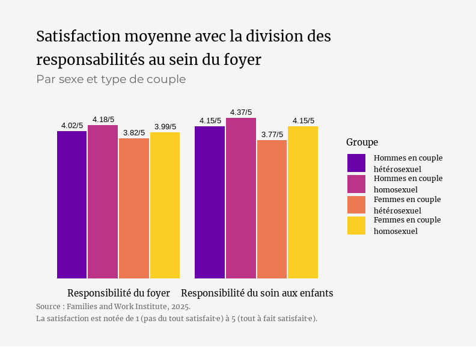
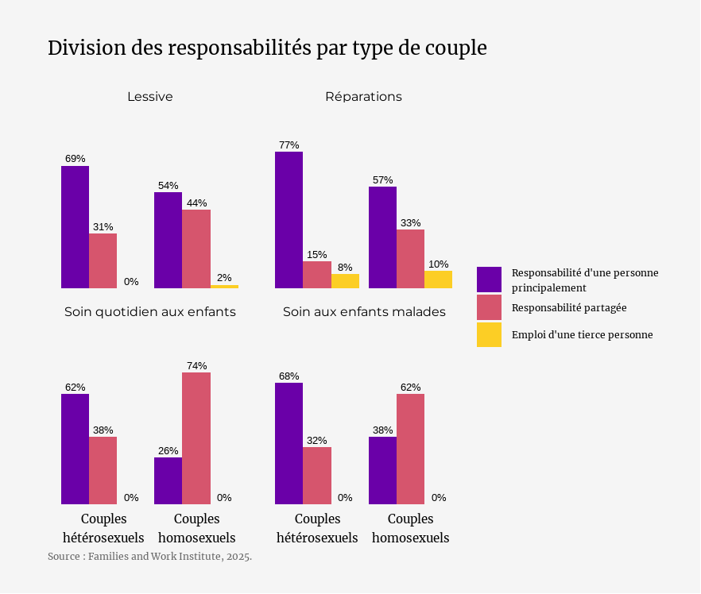

Le non-partage des tâches domestiques : une fatalité ?
18 mai 2025
En tant que présidente d'une association qui sensibilise aux inégalités de genre dans la sphère domestique, j'entend souvent que la répartition inégale des tâches à la maison "inévitable"...
Mais est-ce vraiment le cas ? (Spoiler : non)
👉 Les données relatives aux couples homosexuels montrent que d'autres répartitions sont possibles, plus équitables, et souvent plus satisfaisantes pour les deux partenaires :
Les Françaises en couple avec une autre femme sont 3 fois moins nombreuses que celles en couple avec un homme à déclarer faire "beaucoup plus" que leur partenaire.

Les personnes en couple homosexuel déclarent une satisfaction plus élevée concernant la répartition des responsabilités domestiques.
Certaines tâches, en particulier les soins aux enfants, sont dans les faits beaucoup mieux partagées dans les couples de même sexe.
Alors non, l'inégale répartition des tâches domestiques n'est pas une fatalité. C'est une norme sociale - et comme toute norme, elle peut évoluer.
Vous aimez les stats qui déconstruisent les idées reçues ?
Abonnez-vous ma liste de diffusion en cliquant sur le bouton ci-dessous ↓
Je m'appelle Marie Vialaret. Je suis présidente de l'association tpà et conférencière sur les questions d'égalité de genre. Statisticienne de formation, je suis consultante indépendante en analyse de données.
Diplômée de la Toulouse School of Economics, j'ai ensuite étudié les statistiques appliquées à l'ENSAE ParisTech.